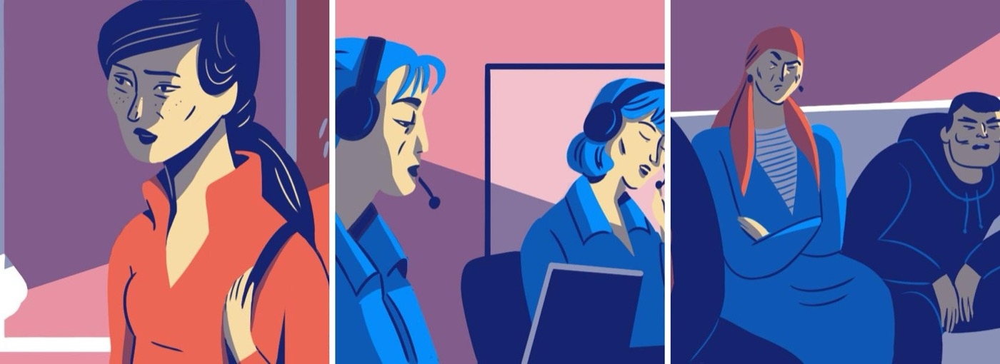
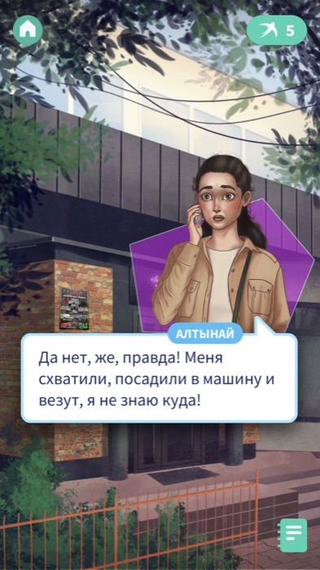
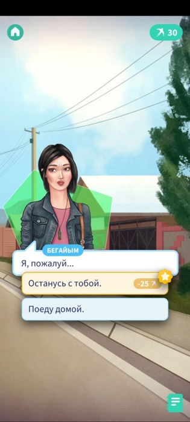
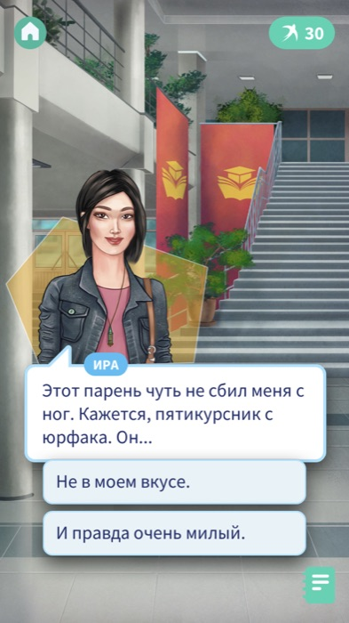
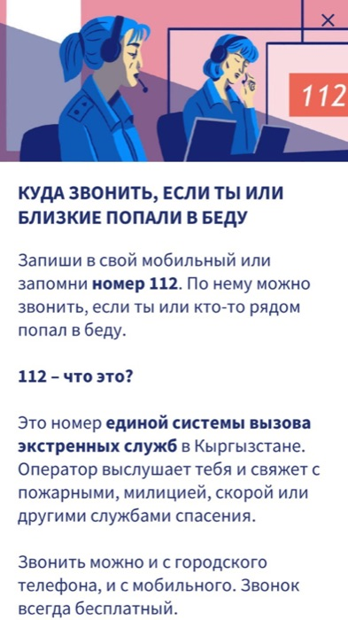

Learning design case study · Game-based learning
Game mechanics with education
Content note: this case study discusses bride kidnapping and gender-based violence.
Ala-kachuu ("grab and run") is the practice of bride kidnapping in Kyrgyzstan: a young woman — sometimes one the man has never met — is abducted and pressured into marriage. Although it is illegal and punishable by up to 10 years in prison, in some regions it is still treated as a "tradition" and tolerated by the community. Every year thousands of girls are kidnapped, and many face violence; families, fearing shame and social pressure, often push the girl to stay. Lastochki was created to give young women the knowledge, skills and confidence to recognise this danger and act.
We took an existing popular format of text-based novels and combined it with:
Support: review and participation in the writing by lawyers and psychologists; participation of the organisation Open Line, which specialises in the problem of kidnapping girls; external parties.
Kyrgyzstan and Central Asia in general are countries where Islam prevails, family is highly valued and elders are honoured. At the same time, ala-kachuu (kidnapping of girls) is considered a criminal offence and is punishable by a prison term of up to 10 years. Nevertheless, in some regions, especially in mountainous and rural areas, the kidnapping of girls — often accompanied by (literally physical, psychological, and sometimes sexual) violence — is considered a form of tradition and is supported by society as a normal practice.
In the country, respect for parents and elders is very important, therefore it was very important for us not to discredit or undermine the foundations of the social order and to respect the religious beliefs in the country. For this, a team of lawyers, psychologists and simply bearers of the culture worked with us, who reviewed all the content of the game.
It was also important to tell why this happens and what can be done differently, how one can act if you see that someone is being kidnapped. The learning taught how to act in situations of the kidnapping of you or someone else, to know the rights that you have, what a healthy and unhealthy way of communication in romantic love looks like, how young people and their parents may understand traditions differently, how to respectfully refuse to participate in a kidnapping and to respond to possible resistance from society, the kidnapper's family or one's own family.
We did not devalue the existing customs, but set out to design a potential situation so that, in real danger of this kind, a girl would understand the order of actions and could apply it in practice. In the long term, the game aims to take part in changing the paradigm of perceiving ala-kachuu as a tradition towards a criminal offence and a violation of human rights.
The difficult part was to embed the educational mechanic and not make the game boring, didactic or moralising. It had to be a game, and the educational part had, on the one hand, to be embedded in it so that the user would perceive it rather as part of the game, and on the other hand so that it could not be ignored, because it is important that the game is not just a game. This delicate balance was found through the in-game currency mechanic.
The educational part was also slightly embedded into the game's plot. According to the plot, the player plays and makes choices for the main heroine, a first-year university student, whose friend is unexpectedly kidnapped for marriage, although she had been making plans for further study, not for a family. On the way to rescuing her friend, the player gets into various situations, meets several romantic love interests at once, lies in ambush — in general, many adventures meet them, which make the game exciting. Nevertheless, the plot itself and many of the questions that the heroine asks herself, and accordingly the player making decisions for her, turn out to be on this plane; the user is given the opportunity to think about what is usually not discussed in society and to form critical thinking, which is usually not welcomed in patriarchal communities.

"No, honestly — it's true! They grabbed me, put me in a car and are taking me somewhere — I don't know where!"
The kidnapping moment. The badge (top right) shows the player's "swallows" currency balance.
The game has more interesting/edgy choices that the user will probably want to make. For example, you need to lie in ambush with the boy the main heroine is in love with, or go home. For a more interesting choice, you can give up a little in-game currency — swallows. Whereas in similar games the in-game currency is literally bought, in our free game it had to be earned in two ways:

A premium decision point — exactly the choice described above:
More engaging choices cost "swallows" (balance shown top right) — earned by learning, not bought.

"That guy nearly knocked me off my feet. A fifth-year law student, I think. He…"
Branching dialogue: the player chooses the heroine's response and communication style.
1) By reading educational notes. At some points of the plot, a "note" opened up to the reader — a small text gathering explanatory information for the corresponding situation. For example, in the game, at the moment where the heroine was communicating with the parents of the kidnapped girl, she could open a note about why parents may support the kidnapping of their daughter — cultural phenomena, features of psychology and sociology were explained. Since the note was short, matched the context of the game, and was important for understanding, the risk of losing the user due to this mechanic was minimal. The statistics confirmed our hypothesis.

"Save the number 112 in your phone or memorise it. You can call it if you or someone near you is in danger.
What is 112? It is Kyrgyzstan's single emergency-services number. The operator will listen to you and connect you with the fire service, police, ambulance or other rescue services. You can call from a landline or a mobile. The call is always free."
A "note" from the in-app Notebook — reading it earns currency and teaches a real, usable skill.
2) By passing tests. In order for the user to be able to use and remember the information by means of repetition (spaced repetition), as well as productive application in different situations (Analysis on Bloom's Taxonomy), a quiz-test method was used for checking. The test questions were not just a repetition of what was said (only in factual situations about the law) but rather an adapted deep understanding of how it relates to situations in real life.
The learning design combined several mechanisms:
The game turned out to be virally popular and, against a projection of 25,000 players per year and only 1,000 euros for marketing, it gathered 100,000 downloads in two months and 150,000 overall. Contrary to fears, no one considered the educational mechanics a distraction; on the contrary, we received many grateful reviews — girls played it themselves and told how they share it with their younger sisters.
An independent study (2022) evaluated the impact of the Lastochki game in the context of child marriage in Kyrgyzstan, combining qualitative and quantitative methods.
Qualitative: 12 girls aged 14–17 from different (mainly rural) regions of Kyrgyzstan were studied before and after playing, using in-depth interviews and diaries.
Quantitative: a survey comparing girls who had played the game with those who had not (N up to ~394) found statistically significant differences. After playing, girls were significantly more likely to:
Qualitatively, girls' image of "what a girl should be" shifted from being modest, obedient and convenient for others toward being strong, independent and pursuing her own goals and plans.
Before: "You have to communicate well and do what [your parents] say." → After: "A girl should be strong… if she feels she is right, she should do what she wants… and strive to achieve all her plans."Sh., 17, rural Jalal-Abad region
Legacy. The game's success contributed to the release of a new game — about the problem of child marriages in the same region, sponsored by UNICEF. The second game in the series entered the shortlist of the international competition of social games Games 4 Change and the team was awarded in New York, USA in 2023. The platform continues as an engine for creating new stories for social problems — a book to combat propaganda in Russia has come out, and a book about LGBTQ+ culture in the same country is next in line.